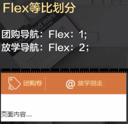
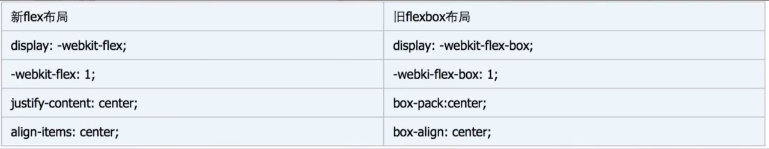

课程手记 · Hello，移动web
内容来自慕课网WebApp开发课程的内容，看完之后回想起来，确实有必要记录一下，便于温故
课程地址：http://www.imooc.com/learn/494
Pixel移动开发像素基础
px: CSS pixels 逻辑像素，浏览器使用的抽象单位
dp,pt: device independent pixels 设备无关像素
dpr: devicePixelRatio 设备像素缩放比
计算公式：1px = (dpr)^2 * dp
DPI: 打印机每英寸可以喷的墨汁点（印刷行业）
PPI: 屏幕每英寸的像素数量，即单位英寸内的像素密度
目前，在计算机显示设备参数描述上，二者意思表达的是一样的（单位为硬件像素，非px）
PPI越高，像素数越高，图像越清晰，但可视度越低（小），系统默认设置缩放比越大

Retina屏（高清屏）dpr都是大于等于2
Viewport视图
思考下面一个问题：

手机浏览器默认为我们做了两件事情：
一：页面渲染在移动设备分辨率大小的viewport
二：缩放
为什么渲染时，要有Viewport？
为了排版正确。
viewport有两个，visual viewport和layout viewport

Viewport Meta标签
<meta name="viewport" content="name1=value1,name2=value2">
width: 设置布局viewport的特定值（”device-width”）
initial-scale: 设置页面的初始缩放
minimum-scale: 最少缩放
maximum-scale: 最大缩放
user-scalable: 用户能否缩放
常用写法：
<meta name="viewport" content="width=device-width,inital-scale=1,user-scalable=no">
Flex弹性盒子布局
.nav{display:-webkit-flex;}/*父元素*/
.item{flex:1}/*子元素*/
display:-webkit-flex 标示使用弹性布局
flex:num 占容器的比例
Flex不定宽高的水平垂直居中
.parent{
justify-content:center;/*子元素水平居中*/
align-items:center;/*子元素垂直居中*/
display:-webkit-flex;
}
Web的Flex弹性盒模型
http://oldblog.smallyu.net/web/web_flex.html
访问这个链接查看flex的所有属性案例
响应式设计
兼容性
·iOS可以使用最新的flex布局
·android4.4以下，只能兼容旧版的flexbox布局
·android4.4及以上，可以使用最新的flex布局
媒体类型
screen（屏幕）
print（打印机）
handheld（手持设备）
all（通用）
常用该媒体查询参数：
width—视口宽高
height——视口宽高
device-width——设备的宽度
device-height——设备的高度
orientation：检查设备处于横向（landscape）还是竖屏（portrait）
设计点一：百分比布局
仅仅使用媒体查询来适应不同的固定宽高设计，只会从一组css到另一组css的切换。两种之间没有任何平滑渐变。当没有命中媒体查询时，表现就会变得不可控制（滚动，换行）。
设计点二：弹性图片
很简单，如同多一点布局使用百分比，图片也使用百分比。其背后的思路是：无论何时，都全包在图片的元素宽度范围内，以最大的宽度同比完整的显示图片。
设计点三：重新布局，显示与隐藏
当页面达到屏幕手机宽度的时候，很多时候就要放弃一些传统的页面设计思想。力求页面简单，简介。所以我们必须要做出以下处理：
1.同比例缩减元素尺寸
2.调整页面结构布局
3.隐藏冗余的元素
移动web特别样式处理
高清图片
在移动web也页面上渲染图片，为了避免图片产生模糊，图片的宽高应该用物理像素单位渲染，即是100100的图片，应该使用100dp100dp
width:(w_value/dpr)px;
height:(h_value/dpr)px;
一像素边框
同样是retina屏幕下的问题，根本原因：1px使用2dp渲染
border:0.5px (FALSE) 仅仅ios8可以用
sacleY(.5)
相对单位rem
为了是一个各大屏幕的手机，px略显固定，不能根据尺寸的大小而改变，使用相对单位更能体验页面兼容性
em：根据父节点的font-size为相对单位
rem：是根据html的font-size为相对单位
em在多层嵌套下，变得非常难以为何
rem更加能作为全局统一设置的度量
rem的基值设置为多少好？
为了使用各大手机屏幕，rem=screen.width/20
不使用rem的情况：font-size
多行文本溢出
单行文本溢出，对title类的使用非常多，而多行文本溢出，在详情介绍则使用的比较多
终端交互优化
Tap基础事件
300毫秒的故事
移动web页面上的click时间响应都要慢上300毫秒。移动设备访问的web页面都是pc上的页面。在默认的viewport（980px）的页面往往都是需要“双击”或“捏开”放大页面，来看高清页面。而正是为了确认用户是“双击”还是“单击”，safari需要300ms的延迟来判断。
300ms延迟怎么破？
使用Tap时间来代替click事件
自定义Tap事件原理：
在touchstart、touchend时记录时间、手指位置，在touchend时进行比较，如果手指位置为同一位置（或允许移动一个非常小的位移值）且时间间隔比较短（一般认为是200ms），且过程中未曾触发过touchmove，即可认为触发了手持设备上的“click”，一般称它为“tap”。(移动框架库Zepto.js)
Tap“点透”的bug

看过这个过程应该可以秒懂“点透”
Tap透传的解决方案
1.使用缓动动画，过度300ms的延迟
2.中间层dom元素的假如，让中间层接受这个“穿透”
3.“上下”都使用tap时间，原理上解决tap透传事件（但不可避免原生标签click事件）
4.改用Fastclick的库（听过最新的zepto已经fixed掉这个bug）
触摸Touch
Touch基础事件
触摸才是移动设备的交互的核心事件
touchstart：手指触摸屏幕触发（已经有手指放屏幕上不会触发）
touchmove：手指在屏幕滑动，连续触发
touchend：手指离开屏幕时触发
touchcancel：系统取消touch时候触发（不常用）
除常见的事件属性外，触摸事件包含专有的触摸属性
touches：跟踪触摸操作的touch对象数组
targetTouches：特定时间目标的touch对象数组
changeTouches：上次触摸改变的touch对象数组
每个touch对象包含属性：
clientX：触摸目标在视口中的x坐标
clientY：触摸目标在视口中的y坐标
identifier：表示触摸的唯一ID。
pageX：触摸目标在页面中的x坐标（包含滚动）。
pageY：触摸目标在页面中的y坐标（包含滚动）。
screenX：触摸目标在屏幕中的x坐标。
screenY：触摸目标在屏幕中的y坐标。
target：触摸的DOM节点目标。
根据touch对象跟踪触摸具体位置，从而判断触摸交互或手势事件。
BUG
Android只会触发一次touchstart，一次touchmove，touchend不触发
解决方案
在touchmove中加入：enevt.preventDefault()。
但注意
enevt.preventDefault()会导致默认行为不发生，如scroll，导致页面不滚动。
弹性滚动
当客户端的页面滚动到顶部或底部的时候，滚动条会收缩并让我们多滑动一定距离。通过缓冲反弹的效果，带给用户良好的体验。
移动web页面也是拥有这样能力的，但滚动有几种情况需要考虑：
body层滚动：（系统特殊化处理）
再带弹性滚动，overflow：hidden失效，GIF和定时器暂停
局部滚动开启弹性滚动：
body{
overflow:scroll;
-webkit-over-scrolling:touch;
}
注意Android不支持原生的弹性滚动！但可以借助三方库iScroll来实现
下拉刷新
顶端下拉一小点距离，页面弹性滚动向下
上拉加载
使用scroll事件而不是touch时间（android有bug）
总结